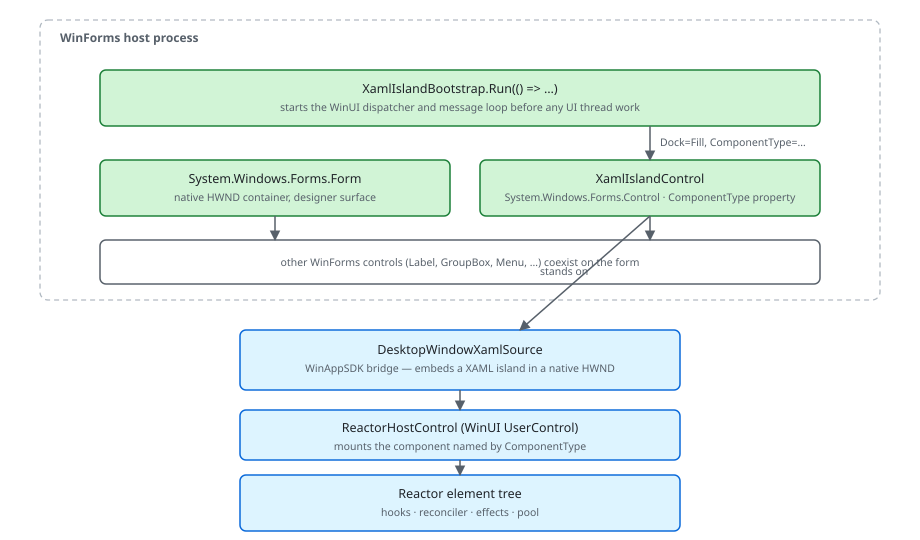

WinUI reference: For the full property surface and design guidance, see Xaml Islands.
XamlIslandControl is a single WinForms control that hosts a complete
Microsoft.UI.Reactor (Reactor) component tree. The rest of the form stays
WinForms — labels, panels, menus, the existing message loop — and
your Reactor subtree renders into a DesktopWindowXamlSource rooted
at the control's client area. Data flow across the boundary is
explicit: WinForms event handlers call into Reactor by setting a
component's props or calling a method on a ReactorHostControl
handle; Reactor calls back into WinForms by invoking a delegate
your form gave it at construction. There is no implicit two-way
binding, no shared DataContext, and no XAML loader — the same
declarative model that holds inside a pure Reactor window applies,
just nested inside System.Windows.Forms.Form. The threading model
is the load-bearing detail: WinForms owns the message pump and
WinUI runs against a DispatcherQueue the bootstrap installs on the
same thread, but the two are not synchronized for arbitrary
background-thread callbacks. The caveat below names the specific
failure mode. This page covers bootstrap, control insertion, data
flow patterns, threading constraints, designer integration,
keyboard and accessibility bridging, and the WPF sibling
wpf-interop for projects mixing all three.
WinForms Interop¶
Reactor components can run inside WinForms applications using XAML Islands.
The Reactor.Interop.WinForms package provides XamlIslandControl — a
standard WinForms control that hosts a Reactor component tree with full
keyboard, accessibility, and theming support.
Bootstrap¶
Every WinForms + Reactor app starts with XamlIslandBootstrap.Run(). This
initializes the WinAppSDK/WinUI runtime and then calls your callback to
show the WinForms UI:
XamlIslandBootstrap.Run(() =>
{
var form = new SWF.Form
{
Text = "My WinForms + Reactor App",
Width = 800,
Height = 500
};
var island = new XamlIslandControl
{
ComponentType = typeof(WinFormsHostDemo),
Dock = SWF.DockStyle.Fill
};
form.Controls.Add(island);
form.Show();
});
The bootstrap handles:
- DispatcherQueue creation for WinUI
- Theme resource loading
- Keyboard message filtering (so WinUI controls receive key events)
- DPI awareness configuration
- Clean shutdown when
Application.Exit()is called
Call XamlIslandBootstrap.Run() once, at the very start of your
application. WinForms owns the message loop — Reactor runs inside it.
XamlIslandControl¶
XamlIslandControl is a System.Windows.Forms.Control that wraps a
DesktopWindowXamlSource. Add it to any WinForms form or panel:
class WinFormsHostDemo : Component
{
public override Element Render()
{
// This component is hosted via XamlIslandControl.ComponentType
var (count, setCount) = UseState(0);
return VStack(12,
Heading("Reactor in WinForms"),
TextBlock($"Count: {count}").FontSize(24),
Button("+1", () => setCount(count + 1))
).Padding(24).Background(SolidBackground);
}
}

There are three ways to set the content:
| Property | Use case |
|---|---|
ComponentType |
Set a Reactor Component type — works in the designer |
ContentFactory |
Provide a factory function for custom initialization |
XamlContent |
Set raw WinUI UIElement content directly |
ComponentType is the simplest path: set it to typeof(MyComponent) and
the control creates and hosts the component automatically.
Designer Support¶
XamlIslandControl has full WinForms designer support. Drag it onto a
form and set ComponentType from the Properties grid — the dropdown lists
all concrete Component subclasses with parameterless constructors:
// In the form's Designer.cs file:
//
// this.reactorIsland = new XamlIslandControl();
// this.reactorIsland.ComponentType = typeof(DashboardComponent);
// this.reactorIsland.Dock = DockStyle.Fill;
// this.panel1.Controls.Add(this.reactorIsland);
//
// The Properties grid shows a dropdown of all Component subclasses
// with parameterless constructors. Select your component and the
// designer serializes it as typeof(DashboardComponent).
At design time, the control renders a placeholder with a border showing the component name. No WinUI objects are created until the app runs, so the designer stays lightweight.
The ReactorComponentTypeConverter powers this integration. It converts
between Type objects and type name strings, and enumerates available
components for the dropdown.
Keyboard and Tab Navigation¶
XAML Islands need explicit keyboard bridging to interoperate with WinForms
tab order. XamlIslandControl handles this automatically:
class KeyboardDemo : Component
{
public override Element Render()
{
var (text, setText) = UseState("");
// Tab moves focus into this Reactor tree from WinForms controls.
// Tab/Shift+Tab cycles through Reactor controls normally.
// Tab out of the last Reactor control returns focus to WinForms.
return VStack(12,
TextBox(text, setText, placeholderText: "Type here...", header: "Message")
.TabIndex(0),
Button("Submit", () => { })
.TabIndex(1)
.AccessKey("S")
).Padding(24).Background(SolidBackground);
}
}
- Tab/Shift+Tab moves focus between WinForms controls and into/out of the Reactor component tree
- Arrow keys, Enter, Escape are routed to WinUI controls inside the island
- Alt+key shortcuts work for both WinForms menus and Reactor
AccessKeymodifiers
The bootstrap's ContentPreTranslateMessage hook ensures keyboard messages
reach WinUI controls. No additional configuration is needed.
Accessibility¶
Screen readers see Reactor components inside XAML Islands as part of the WinForms automation tree. The interop layer bridges:
class AccessibleIslandComponent : Component
{
public override Element Render()
{
var (name, setName) = UseState("");
// All accessibility modifiers work inside XAML Islands
return VStack(12,
Heading("Registration")
.HeadingLevel(AutomationHeadingLevel.Level1),
TextBox(name, setName, header: "Full Name")
.AutomationName("Full name")
.Required()
.TabIndex(0),
Button("Register", () => { })
.AutomationName("Submit registration")
.TabIndex(1)
).Padding(24)
.Landmark(AutomationLandmarkType.Form)
.Background(SolidBackground);
}
}
- AutomationName, HeadingLevel, and other accessibility modifiers work identically to a pure Reactor app
UseAnnouncelive regions are forwarded through the island boundary- Tab order flows correctly between WinForms and Reactor controls
- Focus trapping via
UseFocusTrapworks within the Reactor subtree
See Accessibility for the full modifier reference.
Data flow across the boundary¶
Data crossing the WinForms ⇄ Reactor boundary moves through three mechanisms — pick the one that matches direction and frequency:
| Direction | Mechanism | Use when |
|---|---|---|
| WinForms → Reactor (one-shot) | XamlIslandControl.ComponentType = typeof(MyComponent) and recreate |
Setting initial content once per form. Re-assigning rebuilds the subtree. |
| WinForms → Reactor (live) | ContentFactory returning a ReactorHostControl; keep a reference to the host's root component handle |
The host is constructed once; you call methods on the component from event handlers. |
| WinForms → Reactor (observable VM) | Pass an existing INPC view model into the component constructor; the component calls UseObservable to subscribe |
You already have a WinForms-shaped view model and want Reactor to re-render on its change events. |
| Reactor → WinForms | Inject a Action<T> callback into the component's props; component calls it from event handlers |
Whenever the Reactor subtree needs to push a value back to the host. |
The flow is explicit and one-directional unless you wire
UseObservable over a WinForms-side INotifyPropertyChanged
source. There is no implicit DataContext and no global event bus —
each crossing is a method call you write.
Threading constraints¶
The bootstrap creates a DispatcherQueue on the WinForms UI thread
(the thread Application.Run is dispatching on) and pins WinUI to
that thread. WinForms message-pump callbacks (Click, Load,
Paint) are already on the right thread — calling
element.SetValue(...) or invoking a setter from inside a Click
handler is safe and the auto-marshal path is a no-op.
The danger is background threads. BackgroundWorker.ProgressChanged,
Task.Run(...) continuations without ConfigureAwait, and
HttpClient async callbacks land on the thread pool by default. If
your handler then tries to set a Reactor UseState directly,
Reactor's auto-marshal in RenderContext.SetState queues the write
onto ReactorApp.UIDispatcher — which works inside a pure Reactor
window but, inside a WinForms host, is only the right dispatcher if
you bridged it explicitly. The safe shape is to invoke
XamlIslandControl.Dispatcher.TryEnqueue(...) from background
callbacks before touching Reactor state. The caveat below covers the
specific exception you'll see if you forget.
Caveat: WinForms
Application.Idleand the WinUIDispatcherQueueare NOT synchronized. CallingElement.SetValue(...)from a WinFormsButton.Clickhandler is fine — the click already runs on the WinForms UI thread, which is the same thread the WinUI dispatcher targets, and Reactor's auto-marshal sees no thread change. But calling it from aBackgroundWorker.ProgressChangedhandler raised by a worker thread will throwCOMException: 0x8001010E (RPC_E_WRONG_THREAD)from the underlyingIXamlObjectsetter — Reactor's auto-marshal looks atReactorApp.UIDispatcherwhich, inside a WinForms host, may not have been initialized at all (interop bootstrap installs the dispatcher on the host control, not the global app). The fix is to marshal manually first:xamlIsland.Dispatcher.TryEnqueue(() => setState(value))from the background handler. The corresponding analyzer isREACTOR_INTEROP_001("Reactor state setter called from non-UI thread in WinForms host") — Warning-level — but it only fires when the analyzer can prove the call site is on a non-UI thread, which it cannot do acrossTask.Runlambda boundaries.
Background and Sizing¶
XAML Islands do not provide an implicit background or stretch behavior. Reactor components hosted in WinForms must manage their own background:
class BackgroundDemo : Component
{
public override Element Render()
{
var (count, setCount) = UseState(0);
// Always set an explicit background on root content.
// XAML Islands have no default background — without this,
// content renders on a transparent surface.
return Grid([GridSize.Star()], [GridSize.Star()],
VStack(12,
TextBlock("Theme-aware background").Bold(),
TextBlock($"Count: {count}"),
Button("Increment", () => setCount(count + 1))
).Padding(24)
).Background(SolidBackground);
}
}
Wrap your component's root in Grid(...) with .Background(...) to fill
the island area. Without this, the component renders on a transparent
background and may not stretch to fill the WinForms control bounds.
Advanced: ContentFactory¶
For components that need constructor parameters or custom host configuration,
use ContentFactory instead of ComponentType:
// ContentFactory runs on the UI thread once the island is ready. Return any
// UIElement — typically a ReactorHostControl wrapping your component.
// ReactorHostControl has no SetComponent<T>() method: use ComponentFactory for
// parameterless components, or Mount(...) when the component needs arguments.
static class ConfigurableIsland
{
public static XamlIslandControl Create(string title) => new()
{
ContentFactory = () =>
{
var host = new ReactorHostControl();
host.Mount(new ConfigurableComponent(title));
return host;
},
Dock = SWF.DockStyle.Fill,
};
}
class ConfigurableComponent(string title) : Component
{
public override Element Render()
{
var (count, setCount) = UseState(0);
return VStack(12,
Heading(title),
TextBlock($"Value: {count}"),
Button("+1", () => setCount(count + 1))
).Padding(24).Background(SolidBackground);
}
}
The factory function runs on the UI thread after the XAML Island is ready.
Return any UIElement — typically a ReactorHostControl wrapping your
component. Note that ComponentType lives on XamlIslandControl, not on
ReactorHostControl: inside a factory you set ComponentFactory for a
parameterless component, or call Mount(component) when it takes arguments.
Patterns¶
Bridge a WinForms VM into a Reactor component via UseObservable¶
When an existing WinForms app already has a view model implementing
INotifyPropertyChanged, the migration path is to host a Reactor
component that subscribes to the same VM rather than rewriting
state into hooks. The Reactor component receives the VM via
constructor props and calls UseObservable to bind
the subscription to its lifetime; the WinForms form keeps the same
VM reference and reacts to its property changes through the same
INPC pipeline it always used. Result: incremental adoption, one
form at a time, no big-bang rewrite.
Share a single accessibility tree across island and host¶
The bootstrap wires the WinForms accessibility tree into the
UIAutomation tree rooted at the island. Screen
readers see one logical app, not two: the form's Label controls,
the island's Reactor Text elements, and the rest of the form
appear in a single Narrator pass. To make this work, set
AutomationName on the WinForms surrounding chrome (labels,
group boxes, the form itself) — without it, Narrator reads "pane"
for the WinForms half and the experience is disjoint.
Round-trip focus on Tab¶
Tab from a WinForms TextBox should enter the Reactor subtree at
its first focusable element, Tab again should advance within Reactor,
and Tab off the last Reactor element should return to the next
WinForms control. XamlIslandControl handles this via WinForms
Control.PreviewKeyDown and the bootstrap's PreTranslateMessage
filter; no extra wiring is needed for the simple case. For complex
tab orders that mix island and host explicitly, set TabIndex on
both sides — WinForms TabIndex and Reactor .TabIndex(n) use the
same integer space.
Common Mistakes¶
Not calling XamlIslandBootstrap.Run() first¶
The bootstrap initializes the WinAppSDK, installs the dispatcher,
and registers the keyboard message filter. Without it,
XamlIslandControl.Load either no-ops (the control renders empty)
or throws InvalidOperationException: 'WindowsAppSDK was not
bootstrapped on this thread.' — depending on which property
triggers the lazy initialization first. The fix is the canonical
entry point shown in the bootstrap snippet above: every WinForms +
Reactor Main method opens with XamlIslandBootstrap.Run(() => { … }).
Placing the island inside a Panel with DoubleBuffered = true¶
WinForms' double-buffering composites child controls into an
off-screen bitmap on every paint. XAML Islands render via DirectX
to a separate composition surface that doesn't participate in
GDI double-buffering; the result is severe flicker, white flashes
during resize, and intermittent stale-frame artifacts. The fix is
to remove DoubleBuffered = true from any container above the
island. Set it only on sibling WinForms controls that don't
contain an island.
Ignoring accessibility on the WinForms surrounding chrome¶
A Reactor subtree using AutomationName on
every Element is fine on its own. Drop it into a WinForms form
whose Label controls have no AccessibleName set and whose
GroupBox headers are empty, and Narrator reads "pane, pane,
pane" before reaching the island. The full-app a11y story
requires both halves. Run the a11y scanner
from inside the island and axe-windows / Accessibility Insights
across the host form.
Tips¶
Call XamlIslandBootstrap.Run() first. Before any WinForms forms are
shown. The bootstrap must initialize the WinUI runtime before any
XamlIslandControl instances are created.
Use ComponentType for simple cases. It is designer-friendly and
handles lifecycle automatically. Reserve ContentFactory for components
that need parameters or custom host setup.
Set an explicit background on root components. XAML Islands have no
default background. Use .Background(Theme.SolidBackground) for
theme-aware backgrounds.
Dock or anchor the island control. XamlIslandControl supports
standard WinForms layout: Dock = DockStyle.Fill to fill a panel,
or anchoring for proportional resize.
Test Tab navigation end-to-end. Tab between WinForms controls and Reactor
controls to verify focus flows correctly. The bridging handles most cases
automatically, but complex tab orders may need .TabIndex() hints.
Next Steps¶
- WPF Interop — the WPF sibling: hosting Reactor in
System.Windows.Windowapps with the same XAML Islands surface - Windows — next topic: opening, finding, and managing top-level windows + tray icons
- Data System — previous topic: DataGrid with sort, filter, and editing
- Reactor — back to the index: overview of the framework and full topic list
- Accessibility — accessibility modifiers and screen reader support
- Advanced Patterns — error boundaries, Memo, and escape hatches
- Components — building reusable components to host in WinForms